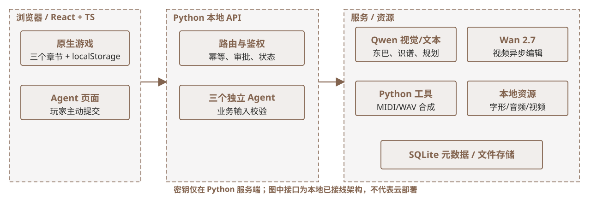

（三）分析过程真实技术架构：代码如何协作
React + TypeScript 承载原生 Web 游戏和 Agent 页面；Python 本地 API 负责校验、路由、任务与文件；Qwen、Wan 及本地 MIDI/WAV 工具分别完成适合自身的工作。

证据与状态 当前是本地可运行架构；密钥仅存服务端。没有总控 Agent，也没有已上线的云端教学管理系统。
React + TypeScript 承载原生 Web 游戏和 Agent 页面；Python 本地 API 负责校验、路由、任务与文件；Qwen、Wan 及本地 MIDI/WAV 工具分别完成适合自身的工作。

证据与状态 当前是本地可运行架构；密钥仅存服务端。没有总控 Agent，也没有已上线的云端教学管理系统。